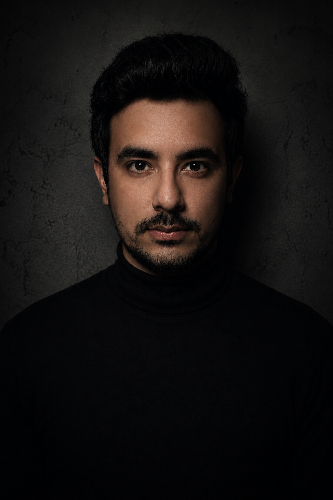
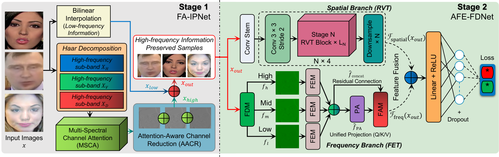
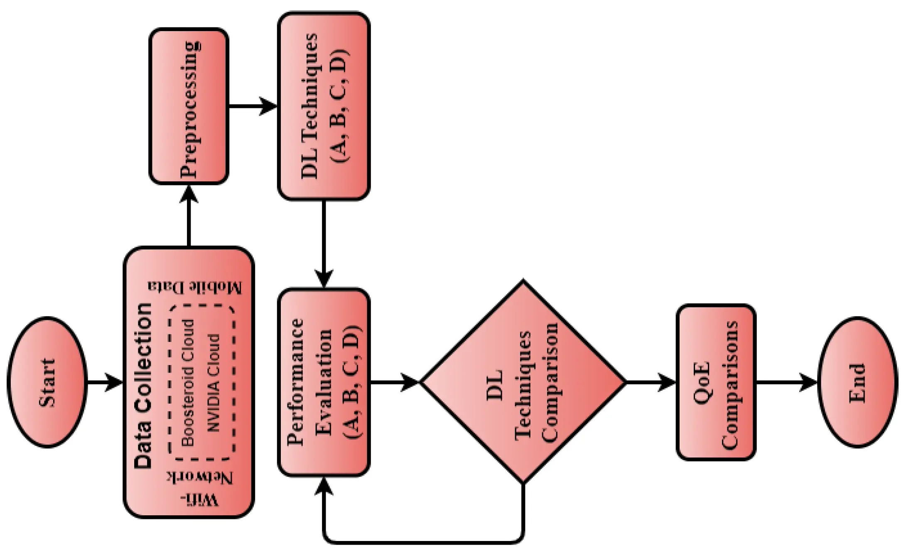
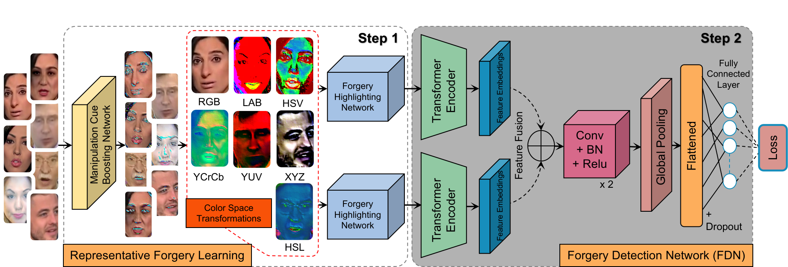
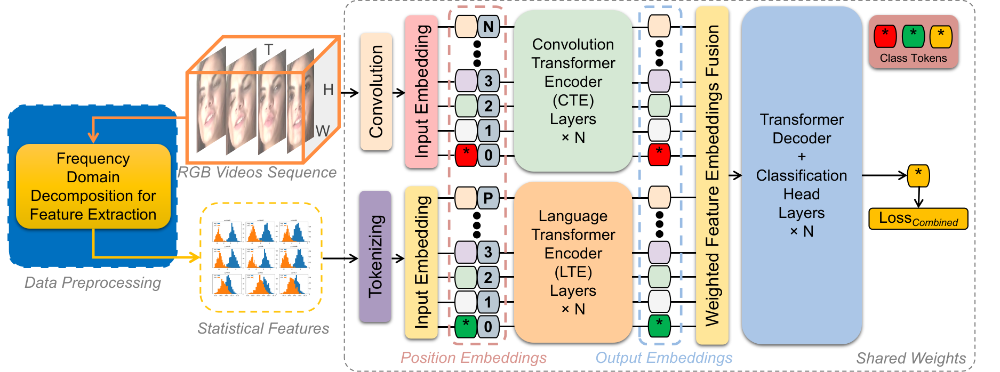
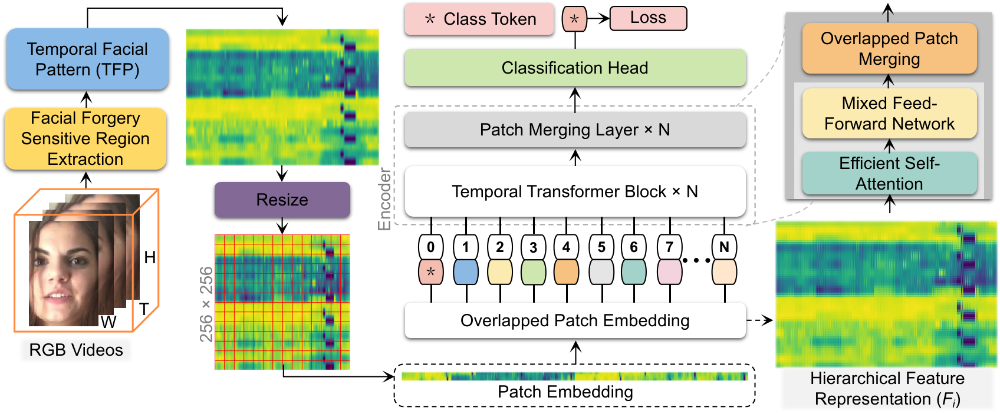
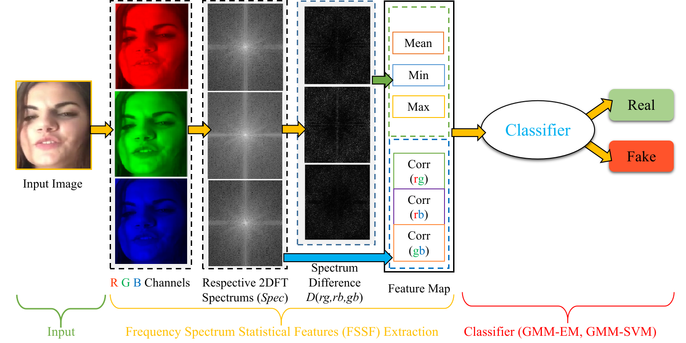
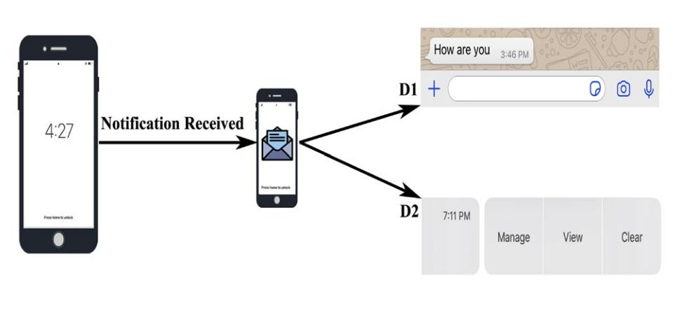
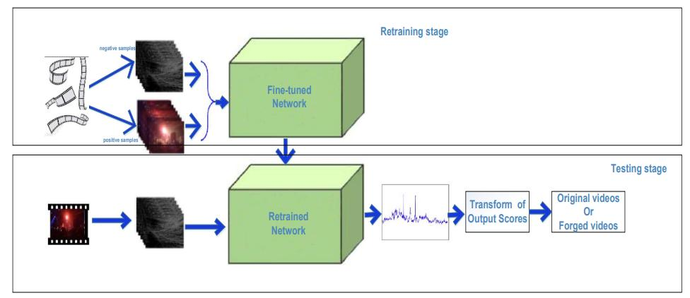
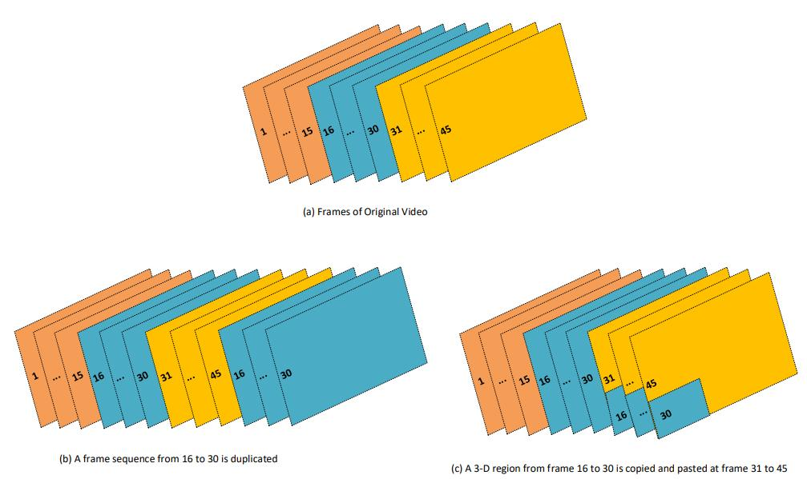

AI-driven cybersecurity & forensicsAI驱动的网络安全与取证
AI-generated multimedia content detection, deepfake forensics, and finger vein recognition/security.AI生成多媒体内容检测、深度伪造取证、指静脉识别与安全。
Personal Page · № 01开放式个人研究工作室 · № 01
Postdoctoral Fellow in Cybersecurity & Multimedia Forensics at School of Cyber Science and Technology (SCST), Sun Yat-sen University (SYSU), Shenzhen, China. I build robust, interpretable, and privacy-aware AI systems for deepfake detection, biometric security, and real-world distribution shift.中山大学网络安全与多媒体取证博士后，研究鲁棒、可解释、隐私保护的人工智能系统，应用于深度伪造检测、生物特征安全与真实场景分布偏移。

About / manifesto · № 02关于 / 宣言 · № 02
My research addresses real-world cybersecurity and AI-safety challenges at the intersection of trustworthy machine learning, computer vision, and multimedia security. I develop robust, interpretable, and fair AI systems for deepfake detection, forensics, biometric anti-spoofing, and privacy-preserving AI.我的研究关注可信机器学习、计算机视觉与多媒体安全交叉处的真实网络安全与 AI 安全问题，目标是构建鲁棒、可解释、公平的深度伪造检测、多媒体取证、生物特征防伪与隐私保护 AI 系统。
I am interested in human-centered, higher-level, human-friendly ML concepts that make model behavior understandable to researchers, investigators, engineers, and the wider public.我关注以人为中心、更高层次、易于理解的机器学习表达方式，使研究人员、调查人员、工程师和公众都能理解模型行为。
Research areas · № 03研究方向 · № 03
AI-generated multimedia content detection, deepfake forensics, and finger vein recognition/security.AI生成多媒体内容检测、深度伪造取证、指静脉识别与安全。
Fairness, interpretability, adversarial robustness, secure data pipelines, and transparent forensic reasoning.公平性、可解释性、对抗鲁棒性、安全数据管道与透明取证推理。
Unsupervised, semi-supervised, and self-supervised learning for threat environments that differ from curated datasets.面向与精心整理的数据集不同的威胁环境的无监督、半监督与自监督学习。
Alternative color spaces, frequency statistics, temporal coherence, audio-visual cues, VLMs, and LLM-driven workflows.替代色彩空间、频域统计、时序一致性、音视频线索、视觉语言模型与大语言模型驱动的工作流。
Can deepfake predictions be explained in an interpretable way? Do similar detectors use different evidence? Can black-box explanations match model-specific explanations? Can temporal and audio information yield more coherent explanations? How can explanations improve models and datasets?深度伪造检测的预测能否以可解释方式呈现？相似检测器是否使用不同证据？黑盒解释能否接近模型特定解释？时序与音频信息能否产生更一致的解释？解释性如何反向改进模型与数据集？
Education · № 04教育与经历 · № 04
School of Cyber Science and Technology, Sun Yat-sen University, Shenzhen. Areas: multimedia forensics, trustworthy ML, VLMs, and LLMs. Active core member on national/provincial funded projects.中山大学网络空间安全学院，深圳。研究方向：多媒体取证、可信机器学习、视觉语言模型、大语言模型。国家级/省级项目核心成员。
South China University of Technology (SCUT), Guangzhou. Areas: Multimedia deepfake forensics, ML, privacy preservation, and financial technology. Award & Scholarship: Excellent Graduate Student Award; Chinese Government Full Fellowship; Guangdong Outstanding International Student Scholarship.华南理工大学，广州。研究方向：多媒体深度伪造取证、机器学习、隐私保护、金融科技。获奖与奖学金：优秀研究生奖、中国政府全额奖学金、广东省来粤留学生奖学金。
South China University of Technology. Areas: Finger vein biometrics, machine learning, information security, and financial technology. Award & Scholarship: Excellent Graduate Student Award; Chinese Government Full Fellowship.华南理工大学。研究方向：指静脉生物特征识别、机器学习、信息安全、金融科技。获奖与奖学金：优秀研究生奖、中国政府全额奖学金。
Experience · № 05经验 · № 05
Co-supervise graduate students, contribute to research funding proposals, and delivered an invited cybersecurity awareness webinar at the Consulate General of Pakistan, Guangzhou in 2026.共同指导研究生，撰写科研项目申请书，2026年在巴基斯坦驻广州总领事馆做特邀网络安全意识网络研讨会。
Assisted graduate-level course Information Hiding and Digital Investigation, including course design, labs, grading, project guidance, article reviews, and thesis writing.协助研究生课程《信息隐藏与数字调查》，包括课程设计、实验、评分、项目指导、论文审阅与写作。
Designed deep learning algorithms for multimedia forensics, deepfake detection, and finger vein biometric systems; published peer-reviewed papers and co-invented a granted patent.设计多媒体取证、深度伪造检测、指静脉生物特征系统的深度学习算法；发表同行评审论文，共同发明授权专利。
Published work on spectral frequency-domain analysis of color channels and representative forgery learning across color spaces.发表关于色彩通道频域分析与跨色彩空间代表性伪造学习的工作。
Developed cross-domain characteristic analysis with a multi-domain transformer for deepfake detection.开发了面向深度伪造检测的多域Transformer跨域特征分析框架。
Developed temporal coherence-based deepfake video detection algorithms with improved cross-dataset performance.开发了基于时序一致性的深度伪造视频检测算法，提高了跨数据集性能。
Researched and deployed real-time finger vein recognition systems, fake finger vein attack identification, overhead security analysis, and cross-count systems in banking and metro hardware.研究并部署实时指静脉识别系统、伪造指静脉攻击识别、高空安全分析与跨计数系统，应用于银行与地铁硬件。
Funding & collaborations · № 06基金与合作 · № 06
Research on Intelligent Video Processing Technology in the Encrypted Domain. Sun Yat-sen University, Project No. 62572500. Role: Core Research Member.加密域智能视频处理技术研究。中山大学，项目号62572500。角色：核心成员。
National Natural Science Foundation of China grant projects U23B2022 and U22A2030; Guangdong Major Project of Basic and Applied Basic Research, Grant No. 2023B0303000010. Role: Core Research Member.国家自然科学基金项目U23B2022、U22A2030；广东省基础与应用基础研究重大项目，项目号2023B0303000010。角色：核心成员。
Science and Technology Foundation of Guangzhou Huangpu Development District, Grant No. 2022GH15. Role: Core Research Member.广州开发区科技基金，项目号2022GH15。角色：核心成员。
Collaborative product development on overhead security analysis, cross-count systems, fake finger vein detection, and low-quality finger vein recognition.合作产品开发：高空安全分析、跨计数系统、伪造指静脉检测、低质量指静脉识别。
Publications · № 07论文 · № 07
Muhammad Ahmad Amin, Jiangqun Ni, Ping Xu, Zeqin Yu, Dahao Fu.
TL;DR:简而言之： Conventional resizing acts as a low‑pass filter, erasing deepfake cues; our two‑stage framework preserves them for robust detection.传统缩放操作如同低通滤波器会抹除深度伪造痕迹；我们提出的两阶段框架能保留这些痕迹，实现鲁棒检测

Awais Khan Jumani, Jinglun Shi, Asif Ali Laghari, Muhammad Ahmad Amin, Aftab ul Nabi, Kamlesh Narwani, Yi Zhang.
TL;DR:简而言之： A study of QoE in cloud gaming and VR using deep learning and facial emotion cues.利用深度学习和面部情绪线索研究云游戏与VR中的体验质量。

Muhammad Ahmad Amin, Yongjian Hu, Yu Guan, Muhammad Zain Amin.
TL;DR:简而言之： A multi-color-space forgery learning framework that improves robustness and cross-dataset generalization.一种多色彩空间伪造学习框架，提高鲁棒性和跨数据集泛化能力。

Muhammad Ahmad Amin, Yongjian Hu, Chang-Tsun Li, Beibei Liu.
TL;DR:简而言之： SVFT combines frequency-domain and spatial artifacts through a transformer-based framework for robust deepfake detection.SVFT通过基于Transformer的框架融合频域和空间伪影，实现鲁棒的深度伪造检测。

Muhammad Ahmad Amin, Yongjian Hu, Jiankun Hu.
TL;DR:简而言之： A bi-level temporal modeling and coherence analysis approach for intra- and cross-dataset deepfake detection.一种双层时序建模与一致性分析方法，用于数据集内和跨数据集的深度伪造检测。

Muhammad Ahmad Amin, Yongjian Hu, Huimin She, Jicheng Li, Yu Guan, Muhammad Zain Amin.
TL;DR:简而言之： Frequency-domain color-channel statistics reveal spectral anomalies in deepfake generation.频域色彩通道统计揭示了深度伪造生成中的频谱异常。

Muhammad Faizan Khan, Lu Lu, Muhammad Toseef, Ahmed Musyafa, Muhammad Ahmad Amin.
TL;DR:简而言之： A rule-based behavioral ML approach for context-aware personalized notification services.一种基于规则的机器学习方法，用于上下文感知的个性化通知服务。

Xuan Hau Nguyen, Yongjian Hu, Muhammad Ahmad Amin, Gohar Hayat Khan, Van Thinh Le.
TL;DR:简而言之： CNN-based detection of inter-frame forgeries using spatial-temporal relationships and confidence scoring.基于CNN的帧间伪造检测，利用时空关系和置信度评分。

Xuan Hau Nguyen, Yongjian Hu, Muhammad Ahmad Amin, Gohar Hayat Khan, Van Thinh Le, Dinh Tu Truong.
TL;DR:简而言之： Detection and localization of 3-D region duplication forgeries in videos.视频中三维区域复制伪造的检测与定位。

Patent · № 08专利 · № 08
Yongjian Hu, Muhammad Ahmad Amin, Wan Dongxia, Wang Yufei, Beibei Liu. China National Intellectual Property Administration, CN 109409181 B, 2022.胡永健、Muhammad Ahmad Amin、万东霞、王宇飞、刘贝贝。中国国家知识产权局，CN 109409181 B，2022年。

Skills, awards, and service · № 09技能、系统与服务 · № 09
Deepfake detection, biometric anti-spoofing, adversarial ML, privacy-preserving AI.深度伪造检测、生物特征防伪、对抗机器学习、隐私保护AI。
PyTorch, TensorFlow, Keras, Hugging Face Transformers.PyTorch、TensorFlow、Keras、Hugging Face Transformers。
Scikit-Learn, NumPy, Pandas, Matplotlib, OpenCV.Scikit-Learn、NumPy、Pandas、Matplotlib、OpenCV。
Python as primary language, plus C++.主要使用Python，以及C++。
Peer reviewer for CVPR, AAAI, IEEE TCE, Digital Signal Processing, and Entertainment Computing. Volunteer member of Scout Association since 2007. Organizer of China Information Hiding and Multimedia Security Workshop (CIHW 2018).担任CVPR、AAAI、IEEE TCE、Digital Signal Processing、Entertainment Computing审稿人。2007年起担任童军志愿者。中国信息隐藏与多媒体安全研讨会（CIHW 2018）组织者。
Guangdong Government Outstanding International Student Scholarship (Ph.D.), Chinese Government Full Scholarship for M.Eng. and Ph.D., and Excellent Graduate Student Award throughout graduate study.广东省政府来粤留学生奖学金（博士）、中国政府全额奖学金（硕士/博士）、研究生期间优秀研究生奖。
Selected media coverage / news · № 10新闻与动态 · № 10
One paper accepted to IEEE Transactions on Consumer Electronics.一篇论文被IEEE Transactions on Consumer Electronics接收。
Delivered invited webinar: A Cybersecurity Awareness Session at the Consulate General of Pakistan, Guangzhou.在巴基斯坦驻广州总领事馆做特邀网络研讨会：网络安全意识讲座。
Joined as core research member on NSFC Surface Project Research on Intelligent Video Processing Technology in the Encrypted Domain, Project No. 62572500.加入国家自然科学基金面上项目加密域智能视频处理技术研究（项目号62572500），担任核心成员。
Co-authored Quality of Experience (QoE) in Cloud Gaming, published in Sensors 2025.合著论文云游戏中的体验质量，发表于Sensors 2025。
Became core research member on NSFC projects U23B2022 and U22A2030, and Guangdong Major Project 2023B0303000010.成为国家自然科学基金项目U23B2022、U22A2030及广东省重大项目2023B0303000010的核心成员。
Joined Sun Yat-sen University as a Postdoctoral Fellow in Trustworthy Machine Learning and Cybersecurity.加入中山大学，担任可信机器学习与网络安全方向博士后研究员。
One paper accepted to Electronic Research Archive.一篇论文被Electronic Research Archive接收。
One paper accepted to Alexandria Engineering Journal.一篇论文被Alexandria Engineering Journal接收。
One paper accepted to Digital Signal Processing.一篇论文被Digital Signal Processing接收。
Attended a workshop on Future Trends in Multimedia Forensics at SCUT organized by Prof. Alex Kot, Director, ROSE Lab, Nanyang Technological University.参加华南理工大学举办的多媒体取证未来趋势研讨会，由南洋理工大学ROSE Lab主任Alex Kot教授组织。
One paper accepted to the 11th IEEE International Workshop on Biometrics and Forensics in Barcelona, Spain.一篇论文被西班牙巴塞罗那第11届IEEE国际生物特征与取证研讨会接收。
Received Guangdong Government Outstanding International Student Scholarship during Ph.D. study at SCUT.在华南理工大学攻读博士期间获得广东省政府来粤留学生奖学金。
One patent awarded by China National Intellectual Property Administration.一项专利获得中国国家知识产权局授权。
One paper accepted to the Journal of Ambient Intelligence and Humanized Computing on rule-based user behavioral ML.一篇关于基于规则的用户行为机器学习的论文被Journal of Ambient Intelligence and Humanized Computing接收。
One paper accepted to the International Journal of Image, Graphics and Signal Processing.一篇论文被International Journal of Image, Graphics and Signal Processing接收。
One paper accepted to the International Journal of Image, Graphics and Signal Processing.一篇论文被International Journal of Image, Graphics and Signal Processing接收。
Started collaborative projects at the R&D Institute of GRG Banking Ltd.在广电运通研发中心启动合作项目。
Joined the Research Centre of Multimedia Information Security Detection and Intelligent Processing at SCUT as a Ph.D. student advised by Prof. Yongjian Hu.加入华南理工大学多媒体信息安全检测与智能处理研究中心攻读博士，导师胡永健教授。
Filed a patent application based on the thesis An Adaptive Detection Method for the Upper and Lower Edges of the Low-quality Finger Vein Images.基于硕士论文提交专利申请一种低质量指静脉图像上下边缘自适应检测方法。
Won the Excellent Graduate Student Award from the School of Electronics and Information Engineering and School of International Education.获得电子与信息学院及国际教育学院优秀研究生奖。
Won the Best Master of Engineering Dissertation Award.获得工程硕士优秀学位论文奖。
Successfully defended the Master of Engineering dissertation A Study on the Preprocessing of Finger Vein Recognition System at SCUT.在华南理工大学成功完成工程硕士学位论文答辩指静脉识别系统预处理研究。
Contact / conversation · № 11开始交流 · № 11
School of Cyber Science and Technology网络空间安全学院
Sun Yat-sen University, Shenzhen, China中国·深圳·中山大学